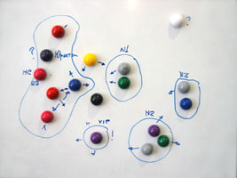

Метод Оптимизации Системных Коммуникаций (МОСК)
web-версия
| Цель Метода: оптимизация системы для максимально эффективного выполнения ее функции.
Пример задач, которые решаются с помощью МОСК:
Бизнес задачи
- Повышение эффективности работы компании/подразделения/команды/участников проекта
- Вывод компании из кризиса (оптимизация структуры самой компании и/или системы ее взаимодействия с другими участниками рынка)
- Разработка оптимальной структуры новой компании/подразделения
- Поиск наиболее эффективных путей развития компании
Общие задачи
- Создание гармоничных отношений в семье или в коллективе
- Другие системные задачи
|
|

|
Введение
Метод был разработан мною на основе синтеза Теории Ограничения Систем, Системных расстановок по Хелингеру и Нового Кода НЛП. С весны 2008 г., когда Метод появился, он был многократно опробован (отдельно и в сочетании с другими технологиями) и показал очень хорошие результаты. На настоящий момент Метод представлен в наиболее оптимальной форме, но, безусловно, всегда будет совершенствоваться в деталях и, при необходимости, дополнятся нововведениями. Версия инструкции указана перед первым шагом.
Если у вас будет желание поделиться результатами или своими идеями по поводу Метода, опробованными на конкретных задачах - пишите, буду рад пообщаться.
Егор Булыгин
Технические требования
1. Метод работает только с теми системами, частью которых вы являетесь сами. Уровень вашей иерархии в системе важен, но не критичен.
2. При моделировании новой структуры подвижность элементов имеет важное значение. Оптимальные инструменты для выполнения Метода: магнитная маркерная доска, разноцветные маркеры, набор отличающихся магнитов.
3. Использование в сочетании с Методом техник, вызывающих высокоуровневые состояния сознания ("Корневая ценность", "Вихара" и т.п.) и энергетических практик значительно увеличивает скорость получения результата.
Пошаговая инструкция оптимизации системы
v.3.0.
- Определите цель (функцию/задачу/смысл) системы, которую хотите получить.
- Расставьте визуально все элементы системы (в которой/с помощью которой реализуется цель) так, как они расположены сейчас относительно друг друга. Если работа идет с будущей системой – расставьте элементы так, как вы представляете себе будущую систему. Расставляя элементы, начните с себя. Ставя каждый элемент - называйте его: "это...".
- Посмотрите на актуальную структуру системы и запишите все соображения, которые вам приходят в голову.
- Опишите смысл/функцию каждого элемента в расставленной системе, если она не очевидна.
- Определите взаимосвязи между элементами системы.
Опишите тип (условный/безусловный) каждой взаимосвязи и ее суть (в чем она заключается). Можете для удобства использовать условные обозначения и цвета. Например, пунктир может показывать условные связи, а толщина стрелки степень влияния безусловной связи. Посмотрите на системные взаимосвязи и проанализируйте, какие из них являются ключевыми.
- Активизируйте интуитивное (бессознательное) мышление. Для этого можно выполнить любую дыхательную технику или игру Нового Кода НЛП, вызывающую высоко-продуктивное состояние или состояние "незнания".
В случае, если у вас нет возможности это сделать, просто расслабьтесь и посмотрите какое-то время на всю структуру системы целиком, удерживая внимание на всех ее деталях и окружающем пространстве одновременно, сохраняя внутренюю тишину.
- Оптимизируйте и гармонизируйте структуру систему, меняя положение элементов и взаимосвязи между ними с учетом двух системных принципов:
- Система должна максимально эффективно достигать цели (выполнять свою функцию/решать задачу/создавать смысл).
- Каждый элемент системы обязательно должен чувствовать себя хорошо комфортно в новой структуре.
- Проверьте новую структуру системы на наличие «узких мест» («бутылочных горлышек»). Это могут быть следующие ограничения:
- Очень медленные коммуникативные каналы.
- Каналы, требующие чрезмерно больших энергозатрат для получения результата, которые не всегда имеются в доступе.
- Каналы, работающие по ограничивающим условиям (определенное время/определенный объем/др.условия).
- Каналы, имеющие одновременно много зависимостей от других факторов/др.элементов системы/др.коммуникативных каналов.
- Каналы, в которых чаще всего случаются пробки/перебои/на которые поступают жалобы.
- Каналы, дающие высокий процент брака/низкую гарантию результата/высокий риск.
- Прочие сложности.
- Проверьте, чтобы учитывались два обязательных системных принципа (эффективность и комфорт каждого элемента системы). Если необходимо, снова оптимизируйте систему, перемещая элементы и меняя взаимосвязи между ними. Используйте интуитивное мышление.
- Зафиксируйте графически (например, на фото) новую структуру системы. Затем выполните ритуал трансляции системы с новой структурой, поместив мысленно новый образ системы в себя, и в каждый элемент системы. Завершите ритуал любой соответствующей этому фразой, например: "Да будет так."
- Запишите действия, которые собираетесь предпринять для создания новой структуры в системе.
- Очистите пространство и "разименуйте" элементы системы обратно в предметы, поочереди называя каждый из них своим названием ("это синий магнит"), прежде, чем переставить их из пространства.
(с) Егор Булыгин
19.09.2008
Комментарии Facebook
Комментарии Вконтакте
web-версия
на главную